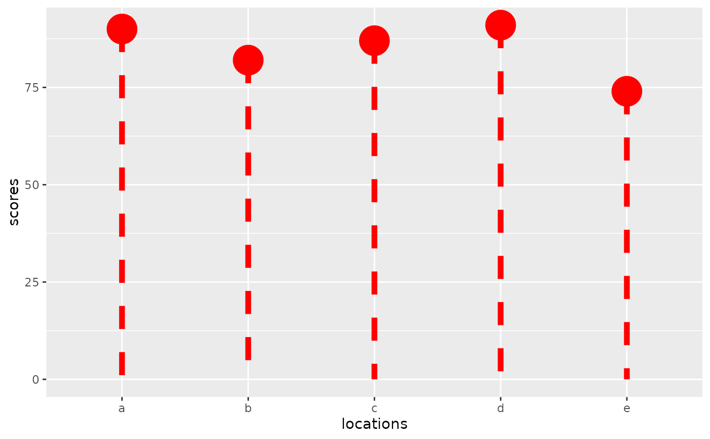

Lollipop Plot
geom_lollipop.RdPoint plot with stem. Custom aesthetics via: linetype (stem), linewidth (stem), color (point), size (point).
Usage
geom_lollipop(
data = NULL,
mapping = NULL,
show.legend = NA,
inherit.aes = TRUE,
position = "identity",
line.colour = NULL,
na.rm = FALSE,
...
)
GeomLollipopExamples
df <- data.frame(locations = letters[1:5], scores = c(90,82,87,91,74))
ggplot(data = df, aes(x = locations, y = scores, yend = 0)) +
geom_lollipop(size = 10, linewidth = 2, linetype = "dashed", color = "red")
